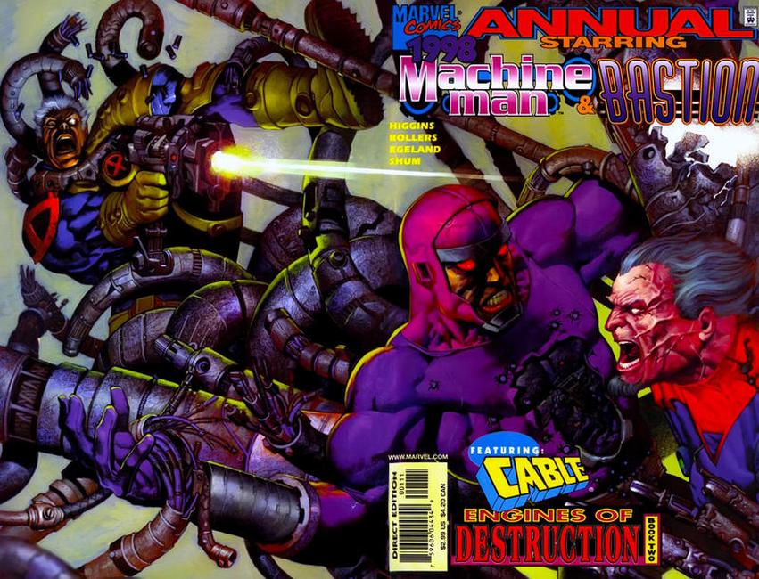

Cable Machine Man:
ENGINES OF DESTRUCTION 1: When a series of bizarre attacks occur at the clinic where Bastion is being held and studied by S.H.I.E.L.D. scientists, G.W. Bridge calls in the one man he trusts to investigate--Cable! But the Askani'son may have bitten off more than even he can chew when he faces not only Bastion, but Marvel's original misunderstood mechanoid: Machine Man! Has this once-heroic robot joined Bastion's campaign of anti-mutant hatred? Continued in Machine Man and Bastion Annual (1998) #1. Written by Michael Higgins and Karl Bollers. Art and wraparound cover by Rick Leonardi and Dan Green.

Machine Man Bastion:
ENGINES OF DESTRUCTION 2: The true identity of Bastion was exposed in last month's Cable, and now it's time for the full story of his mind-blowing origin! Written by Michael Higgins and Karl Bollers. Art by Martin Egeland and Howard M. Shum. Wraparound painted cover by Ariel Olivetti.